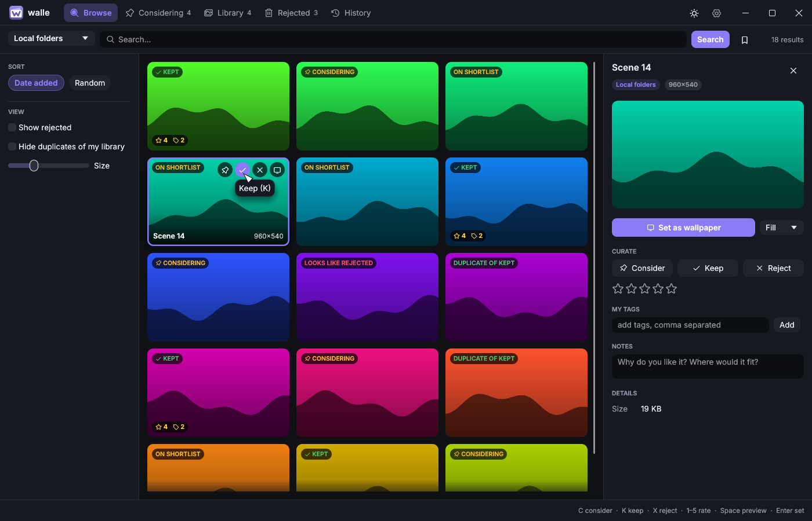
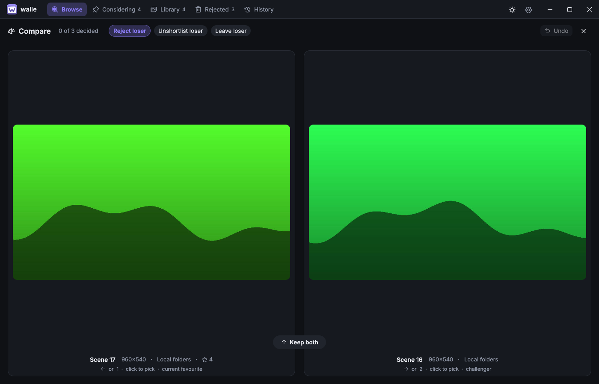
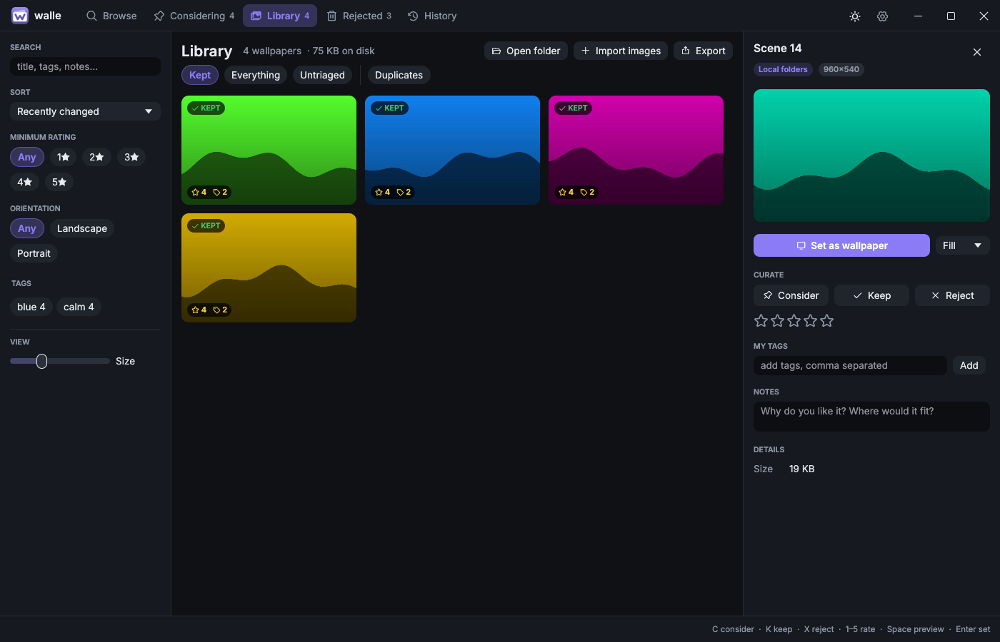
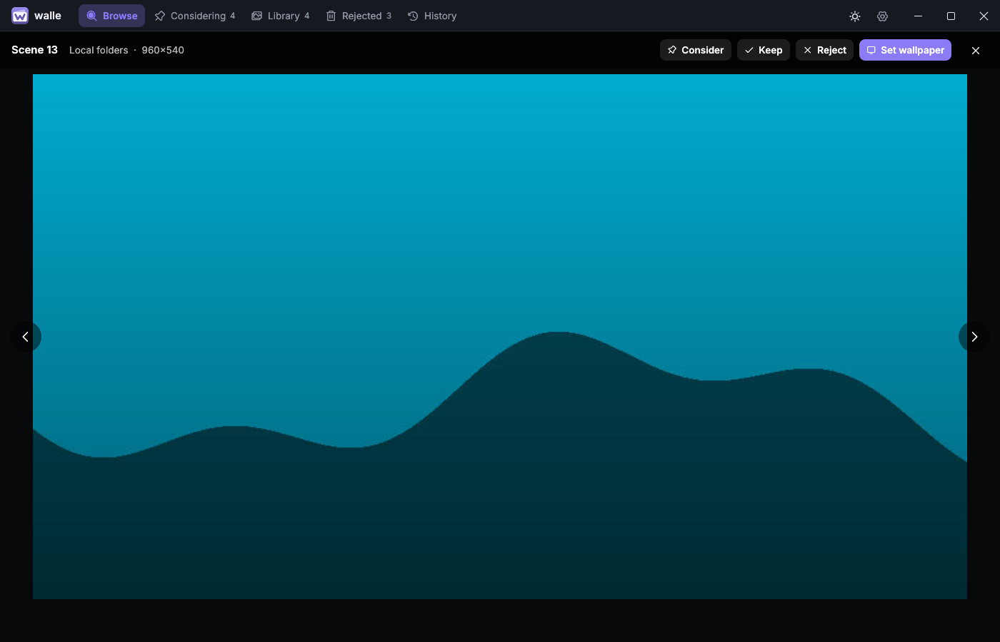
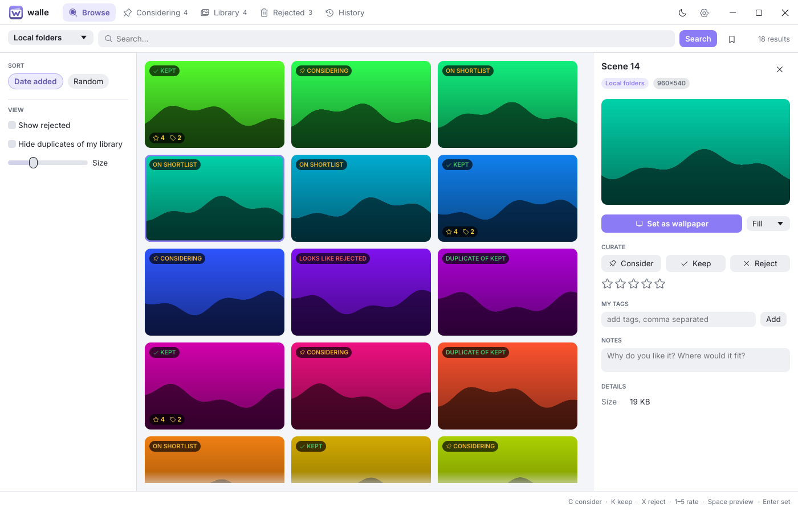

Find the wallpaper you'll actually keep.
walle is a desktop app to browse, shortlist, compare, keep and set wallpapers. Nine sources, one window, and a workflow built around the hard part: deciding.
Free and open source · Windows and Linux · No account, no telemetry

The flow
From a thousand maybes to the one on your desktop.
Searching is easy. Choosing is not. walle gives every picture a place to be while you make up your mind, and one key to send it there.
Browse
Search a source, scroll without end. What you rejected before never comes back.
Consider
Press C and it lands on your shortlist. No tabs, no downloads folder.
Compare
Two at a time, side by side. The winner stays on and meets the next.
Keep
Press K. It is downloaded at once and yours offline, with rating, tags and notes.
Set
Press Enter, or let rotation pick from what you kept.
Features
Compare
Winner stays on.
You can't rank forty pictures in your head, but you always know which of two you like better. Compare turns the shortlist into a run of small, easy decisions.
- Pick with the arrow keys or a click; undo with Backspace
- Keep both when it is too close to call
- You decide what happens to the loser: reject it, unshortlist it or leave it

Library
A collection, not a downloads folder.
Everything you keep lives in a local library you can really search: by your own tags and notes, rating, orientation, resolution and source.
- Works offline: kept wallpapers are saved as originals
- Spots the same picture across searches and sources
- Export to JSON and restore by dropping the file on the window

Preview
See it at full size first.
Space opens the original. Scroll to zoom, drag to pan, and step through the grid with the arrow keys. Every curation key keeps working, so you never leave the picture to decide about it.

Look
Dark or light, in your colour.
Two themes and seven accents, a titlebar that walle draws itself, and an interface that stays out of the way of the pictures.

Drag, or use the arrow keys, to slide between light and dark.
Sources
Nine sources. One grid.
Each source shows only the filters it really supports. Five need nothing at all; the others take a free key that stays on your machine.
Wallhaven
Full search, tags, colours, toplists, "find similar" and your collections.
Key optionalUnsplash
The curated Wallpapers topic, with photographers credited.
Free keyPexels
The curated feed and full search.
Free keyPixabay
Search by orientation, colour and category.
Free keyBing Daily
The last two weeks of daily pictures, in UHD.
No keyNASA APOD
Astronomy Picture of the Day: the whole archive back to 1995.
No keyOpenverse
Openly licensed images from across the web.
No keyLorem Picsum
A steady stream of photographs.
No keyLocal folders
Your own pictures, curated the same way. Drop a folder on the window.
Yours
Keyboard first
One key per decision.
Go through a hundred wallpapers without touching the mouse. Everything is a click away too.
- Move through the grid
- ←↑↓→
- Full-size preview
- Space
- Consider
- C
- Keep
- K
- Reject
- X
- Rate, or clear the rating
- 1–50
- Set as wallpaper
- Enter
- Download
- D
On the desktop
It keeps working after you close it.
Rotation
A new wallpaper on an interval, from what you kept, the shortlist, a tag, a saved search or an online source. No repeats.
Effects
Blur, dim, saturation, tint and vignette, rendered into a copy. The original is never changed.
Dimmer at night
The wallpaper turns darker and warmer in the evening and comes back in the morning, over an hour each way.
Tray and login
Lives in the tray with Next wallpaper one click away, and can start when you sign in.
Many desktops
Windows, GNOME, KDE Plasma, Cinnamon, MATE, XFCE, LXQt, Sway, Hyprland and gevrek, or your own command.
Private by design
A local SQLite library, a cache and one config file. No account, no telemetry. The one thing walle asks on its own is whether there is a newer version, once a day, and you can switch that off.
How it was made
Developed fully with AI, with a hint of human taste.
Every line of walle, this page included, was written by an AI. A human chose what it should be, said no a lot, and kept only what felt right. Much like picking a wallpaper.
Get it
Download and run.
Installers and plain archives for Windows and Linux (x64) are on the releases page, with SHA-256 checksums: an MSI or a zip for Windows, an .rpm, a .deb or a tarball for Linux. Nothing to sign up for, and walle updates itself when you ask it to. The Windows files are not code-signed, so SmartScreen may ask before the first start.
Or build it yourself with a current stable Rust toolchain:
$ git clone https://github.com/ulaas/walle.git
$ cd walle
$ cargo run --release